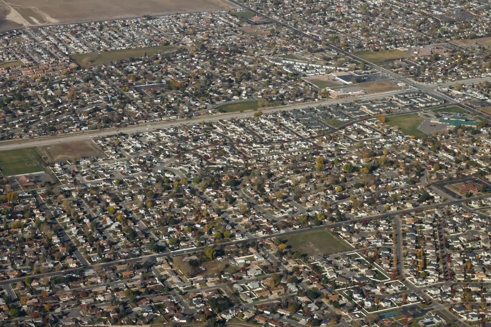

West Jordan, Utah · 7800 South
Plumber in West Jordan, plumbing & HVAC.
Jackson Family Plumbing & HVAC is a plumber and HVAC company in West Jordan, Utah, at 6959 W 7800 S. Water where it shouldn’t be, no hot water, a furnace or air conditioner acting up: call and talk to the family.
West Jordan from the air · formulanone, CC BY-SA 2.0, via Wikimedia Commons
Plumbing & HVAC
One call for the water and the air.
The pipes that carry water through your house and the system that heats and cools it share the same walls, the same basement and often the same emergency. Jackson Family Plumbing & HVAC handles both, from West Jordan.
Tell us what’s going on when you call. A photo of the problem, the age of the water heater or furnace if you know it, and where your main water shutoff is all help us help you faster.
The two-hour leak test
Is your house leaking while you sleep?
Some leaks never show up as a puddle: a toilet flapper, a slab line, an irrigation valve. EPA WaterSense’s simplest check uses the meter you already have. Type in two readings and we’ll do the math.
Waiting for two readings
Type both readings to see the result.
Most water meters sit in a box near the curb. If the readings match, there’s no sign of a leak while the house was quiet.
Test method and figures: EPA WaterSense, Fix a Leak Week (updated March 13, 2026). The average household’s leaks can waste more than 9,300 gallons a year, and nine percent of homes have leaks wasting 50 gallons or more a day. Nothing you type leaves this page.
Before the first hard freeze
Four things to do this week
Find the main shutoff
Know where your home’s water shut-off valve is and how to operate it, and show the rest of the household. It’s the difference between a wet floor and a flooded basement.
Deal with outdoor faucets
IBHS: shut off and insulate the valves if you don’t have frost-proof outdoor faucets, noting that homes built before 2010 typically don’t. Disconnect garden hoses.
Insulate the cold spots
Pipes in attics, crawl spaces and along exterior walls are the ones at risk. Pipe insulation tubes or wraps help, but insulation alone won’t protect pipes in prolonged cold without some heat.
Keep the heat at 55°F
IBHS and the National Weather Service both say to keep the thermostat at least 55°F, even when no one is home. On the coldest nights, open sink cabinets on outside walls.
01Where is Jackson Family Plumbing & HVAC?
6959 W 7800 S, West Jordan, UT 84081.
02How do I reach you?
Call 385-595-5700, or send the form on the contact page.
03How can I tell if I have a hidden leak?
EPA WaterSense suggests reading your water meter before and after a two-hour period when no water is being used. If the reading changes, you probably have a leak. The meter test above does the math for you.
04Is a running toilet really a leak?
Often, yes. WaterSense’s test: put a few drops of food coloring in the toilet tank. If color shows up in the bowl within 10 minutes without flushing, the toilet is leaking. Flush afterward so the tank doesn’t stain.
Contact us
A plumbing or HVAC problem? Call the family.
Call Jackson Family Plumbing & HVAC at 385-595-5700. 6959 W 7800 S, West Jordan, UT 84081.
Contact us